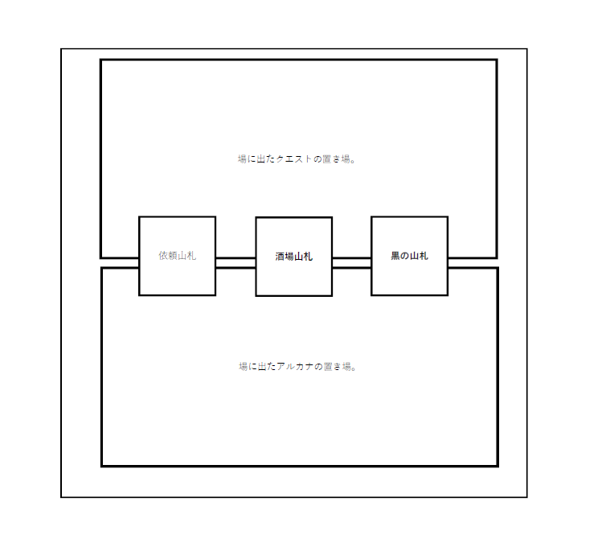

ゲームの進行
ゲームの準備
- クエストカードとクエスト（黒）、義勇軍アルカナ（酒場）のカードの束をそれぞれ良くシャッフルして場に図のように設置します。
- 山札から４枚のクエストと４枚のアルカナを場にそれぞれ配置し、各プレーヤーに５個のイモトークンを配布します。
- じゃんけんなどで一番最初にターンを行うプレーヤーを決めたら、ゲーム開始です。
場のイメージ図

ラウンドの流れ
- ゲームの準備
- ゲームの進行１（前半）
- 最終戦に向かうための条件
- ゲームの進行２（後半）
- ゲームの終わりと勝者
プレーヤーターンの流れ
- クエストカードを選び、クエストカードの処理を行う。
- クエストカードをクエストの山札から選んだ場合、次のクエストカードを山札から引く。
- 義勇軍アルカナを選んでコストを支払う。コストが支払えた場合、手札に加える。